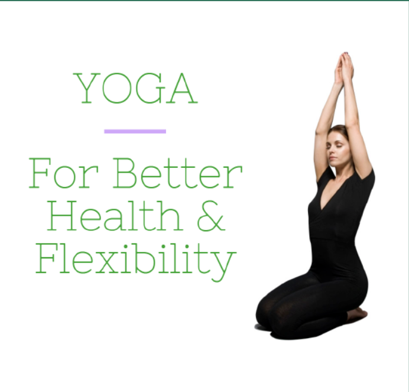

TWO SECONDS
ObjecT PermanencE
瞬间定格，恒存经典
·Shaping our beliefs around permanence, fashion for us is never about fleeting waves. ·Hidden within the details is the true essence of timelessness.
·Embracing this philosophy, TWO SECONDS merges classic silhouettes with contemporary aesthetics.
·Lasting companionship is what each piece offers, enduring beyond seasons. ·Letting every item withstand repeated scrutiny and gracefully age through time.
时尚从不是转瞬即逝的浪潮，而是藏在细节里的永恒。TWO SECONDS以“恒存”为信仰，将经典廓形与当代审美相融，让每一件单品，都成为跨越时间的陪伴，经得起反复审视，耐得住岁月沉淀。
Master motif · 核心定位
A fashion brand focusing on business travel scenarios, adhering to the tenet of "permanence", creating classic, high-quality and versatile items for business travelers.
聚焦商旅场景的时尚品牌，秉持“恒存”主旨，为商旅人士打造经典、高品质、百搭的单品。
简约不简单，经典不陈旧 —— TWO SECONDS，让时尚拥有长久的生命力。

ObjecT PermanencE
ObjecT PermanencE
About TWO SECONDS
Brand Story & Philosophy
品牌故事与理念
Brand Story
·Keenly aware of the ephemeral nature of trends, TWO SECONDS was born from a reflection on "fast fashion's disposability." We grew weary of pieces quickly discarded with each shifting fad and aspired to create a fashion of permanence—one that neither chases fleeting moments nor blindly follows restless aesthetics, but instead focuses on the inherent quality, silhouette, and value of the item itself.
TWO SECONDS的诞生，源于对"时尚速朽"的反思——我们厌倦了潮流迭代中被快速淘汰的单品，渴望创造一种"恒存"的时尚：它不追逐转瞬即逝的热点，不盲从浮躁的审美，而是聚焦于物品本身的质感、廓形与价值。
·Intentionally designed to last, "permanence" is not only our core design principle but also a way of life: we respect the enduring spirit of each piece, letting style return to its essence and allowing classics to transcend time. We believe that true fashion is never about what's "in fashion now," but what's "always right for you."
"恒存"，不仅是我们的设计主旨，更是一种生活态度：尊重每一件物品的生命力，让穿搭回归本质，让经典跨越时间。我们相信，真正的时尚，从来不是"当下流行"，而是"始终合适"。
Brand Philosophy
· Couture of Permanence
Reject over-design, take classic silhouettes as the foundation, integrate contemporary details, so that items can adapt to different scenes and years, realizing long-term wear.
恒存设计：拒绝过度设计，以经典廓形为基础，融入当代细节，让单品适配不同场景、不同年份，实现长久穿着。
· Keen on Texture
Select natural fabrics and exquisite craftsmanship, pay attention to every stitch and every cut, so that items can withstand the wear of years and maintain long-lasting texture.
质感至上：精选天然面料与精湛工艺，注重每一处针脚、每一次剪裁，让单品经得起岁月磨损，保持持久质感。
· Sensible Aesthetics
Not kidnapped by trends, convey the dressing concept of "less is more", making each TWO SECONDS item a "permanent piece" in the wardrobe.
理性审美：不被潮流绑架，传递"少而精"的穿搭理念，让每一件TWO SECONDS的单品，都能成为衣橱里的"永恒单品"。
Collections
Three series of permanent essentials
三大恒存系列单品

Alpha Assets
核心基础系列
Return to the essence of business dressing and business travel needs, create indispensable core basic items for business travelers.
回归商旅穿搭与差旅需求本质，打造商旅人士不可或缺的核心基础单品。

Now & Never
瞬间与永恒系列
Capture the contemporary business aesthetic inspiration, integrate classic business design logic, and make "instant professional charm" become "eternal business companion".
捕捉当代商旅审美灵感，融入经典商旅设计逻辑，让"瞬间的专业魅力"成为"永恒的商旅陪伴"。

Ever Existing
恒存经典系列
The most classic business silhouettes and the most long-lasting texture — this is TWO SECONDS' core interpretation of "permanence" for business travelers.
最经典的商旅廓形，最持久的质感，这是TWO SECONDS针对商旅人士对"恒存"的核心诠释。
Alpha Assets
Core Basic Series
核心基础系列
Return to the essence...
回归商旅穿搭与差旅需求本质。。。。。。
Products

Business Slim Bottoming Shirt
Selected skin-friendly and wrinkle-resistant fabric...
商务修身打底衫：精选亲肤抗皱面料...

Lightweight Wrinkle-Resistant Travel Pants
Simple solid color...
轻薄抗皱差旅长裤...

Multi-Purpose Business Socks
Selected high-elastic...
多用途商务袜子...
Now & Never
Instant and Eternal Series
瞬间与永恒系列
Capture the contemporary...
捕捉当代商旅审美灵感。。。。。。
Products

Minimalist Leather Briefcase
Streamlined business design...
简约真皮公文包...

Slim Fit Business Blazer
Classic business blazer silhouette...
修身商务西装外套...

Wrinkle-Resistant Business Polo Shirt
Simple and elegant collar design...
抗皱商务Polo衫...
Ever Existing
Permanent Classic Series
恒存经典系列
The most classic business silhouettes...
最经典的商旅廓形。。。。。。
Products

Business Formal Shirt
Minimalist business silhouette...
商务正装衬衫...
Slim Fit Wrinkle-Resistant Suit Pants
Classic straight-leg version...
修身抗皱西装裤...

Double-Breasted Business Blazer
Classic double-breasted design...
双排扣商务西装外套...
Lookbook
Styling Guide
穿搭指南
The dressing philosophy of TWO SECONDS is never "piling up items", but "accurate selection" — taking "permanent items" as the core, realizing multiple looks through simple matching, making each item exert its maximum value and practicing our pursuit of "permanence".
TWO SECONDS的穿搭哲学，从来不是"堆砌单品"，而是"精准选择"——以"恒存单品"为核心，通过简单搭配，实现多种造型，让每一件单品都能发挥最大价值，践行我们对"恒存"的追求。
NEST & NAVIAGATE
收放自如的穿搭
For business travelers, dressing needs both the rigor of formal occasions and the comfort of daily commuting. TWO SECONDS adheres to the tenet of "permanence", creating versatile items that can be flexible to adjust — tight for a neat professional look, loose for a relaxed state, easily switching between formal and casual, interpreting the flexible dressing attitude of business travelers.
对于商旅人士而言，穿搭既需正式场合的严谨，也需日常通勤的舒适。TWO SECONDS秉持"恒存"主旨，打造可灵活调节的百搭单品——收紧显利落专业，宽松显松弛状态，轻松切换正式与休闲，诠释商旅人士收放自如的穿搭态度。
Example: Slim Fit Business Blazer: Button up the buttons for formal business meetings, showing a neat and professional posture; unbutton the buttons and match with a casual bottoming shirt for commuting or business trips, showing a relaxed and comfortable state. One blazer achieves flexible dressing, free to loosen and tighten.
修身商务西装外套：系上纽扣，适配正式商务会议，彰显利落专业姿态；解开纽扣，搭配休闲打底衫，适配通勤或差旅，呈现松弛舒适状态，一件西装实现灵活穿搭，收放自如。
CARRY & COMPOSE
组合无限可能
Each "permanent item" of TWO SECONDS is designed with versatility in mind. There is no fixed matching formula — different combinations of core items can unlock diverse styles, whether it is formal business, casual commuting or semi-formal occasions. With a few classic pieces, you can create infinite dressing possibilities, making every match full of surprises and practicality.
TWO SECONDS每一件"恒存单品"，都以百搭性为核心设计，没有固定的搭配公式——核心单品的不同组合，可解锁多样风格，无论是正式商务、休闲通勤，还是半正式场合，用几件经典单品，就能组合出无限穿搭可能，让每一次搭配都兼具惊喜与实用性。
EDIT & EXIST
精简行装，存在依然
For business travelers who often travel, streamlined luggage is the key to efficient travel. Following the concept of "permanence", our items are wrinkle-resistant, wear-resistant, versatile and easy to care for — a few core pieces can meet the dressing needs of the entire business trip, reducing luggage burden, while ensuring a neat and decent image, achieving efficient and high-quality business travel dressing.
对于经常出行的商旅人士而言，精简行装是高效出行的关键。我们遵循"恒存"理念，打造抗皱、耐穿、百搭且易打理的单品——几件核心单品，就能满足整个差旅的穿搭需求，减轻行李负担，同时保证形象利落得体，实现高效高品质的商旅穿搭。
Story
Inspiration & Creative Process
灵感起源与创作过程
Inspiration Origin
灵感起源
·Capturing the "eternal moments" of life, our design inspiration flows from timeless scenes: the vintage architecture of old neighborhoods, the classic patterns within aged books, and the effortless grace found in people's daily attire.
·Anchored in these elements that never fade with time, we infuse them into our creations.
·Rendering each piece a vessel of warmth and story, made to last.
我们的设计灵感，大多来自生活中的"永恒瞬间"：老街区的复古建筑、旧书籍里的经典纹样、人们日常穿搭中的松弛感，这些不随时间流逝而褪色的元素，被我们融入设计，让每一件单品都承载着温度与故事。
Creative Process
创作过程
·Guided by the principle of permanence, every TWO SECONDS piece undergoes meticulous refinement: from fabric selection—prioritizing natural, durable, and breathable materials—to silhouette design, repeatedly adjusted to ensure classic appeal and adaptability to various body types.
·Overseeing every detail with precision, our craftsmanship guarantees enduring wearability through rigorous quality control.
·Sustaining this commitment to excellence, we reject compromise to create pieces meant to accompany our users for years to come.
每一件TWO SECONDS的单品，都要经过反复打磨：从面料的筛选（优先选择天然、耐磨、透气的面料），到廓形的设计（反复调整，确保经典且适配多种身材），再到工艺的把控（注重每一处细节，确保耐穿耐用），我们始终以"恒存"为标准，拒绝敷衍，只为打造一件能陪伴用户多年的单品。
"What doens't remain when you're not looking."
— The essence of permanence —
— 恒存之本质 —
Qualification · 品牌知识测验
Test your knowledge of TWO SECONDS
1. What kind of wear occasion is the brand's clothing style mainly oriented to? / 品牌服装风格主要面向什么场合？
2. In how many locations does the brand have partners in total? / 品牌共有几个合作城市？
3. According to the 2024 report, 18-35 age group accounts for __% , and 23% come from which industries? / 18-35岁占比__%，23%来自哪些行业？
4. Which of the following items may be featured in Alpha Assets? / 以下哪个单品可能出现在Alpha Assets系列？
5. Which of the following contents may be mentioned in the "Creative Process"? / Story中的“创作过程”中可能提到以下哪项？
6. Which of the following is the last hidden answer on the web page that has not yet been asked? / 以下哪项是网页上最后一个隐藏着的还没被问到的答案？
7. What is the genuine content about "Permanence" on this website? / 网站上关于“恒存”,真正想说明什么？
(小写字母，单词间加空格)